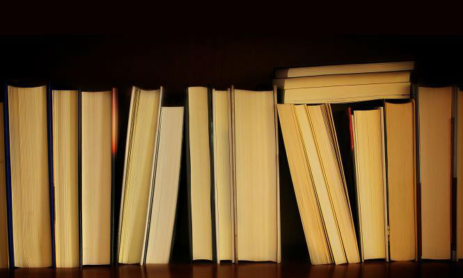
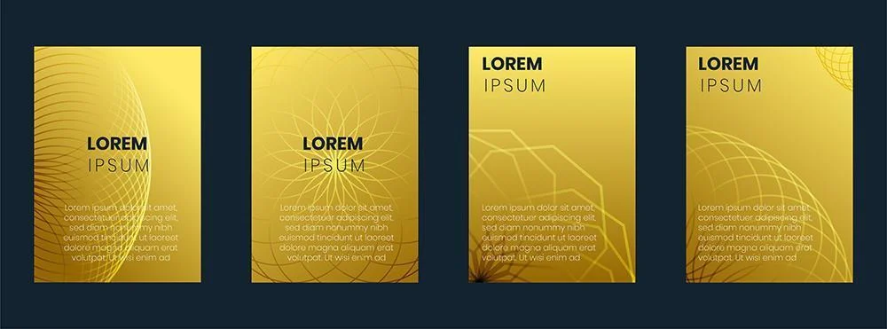

Leer un buen libro permite que nos sumerjamos en mundos paralelos, los de la fantasía, imaginando ser los protagonistas, permite que aprendamos día a día, de pie en el metro o agazapada en la esquina del sofá, cosas nuevas. También hace que la mente se relaje, que aprendamos a disfrutar de la soledad y nos ayuda a ser diferentes: a ser libres cuando aprendemos a elegir según nuestros propios gustos y valores. Hay millones de libros que podemos disfrutar y deberían estar en nuestra mesilla de noche, nuestra estantería o en nuestro bolso para poder disfrutar de ellos en cualquier momento del día. Estos se han llenado, con el tiempo, de aquello que llaman palabras o frases de "célebres escritores".

1. El misterio de la vida no es un problema a resolver, sino una realidad a experimentar (Duna, Frank Herbert)
La importancia de la experiencia es lo que realmente nos hace vivir. Sólo en ésta podemos conocer el misterio de la vida.
v2. Estar solo no tiene nada que ver con cuantas personas hay alrededor (Revolutionary Road, Richard Yates)
La soledad es un sentimiento que, generalmente, viene asociado con una enorme tristeza. Puedes tener mucha gente a tu alrededor, pero sentirte increíblemente solo.
3. Sea un hombre o sea más que un hombre. Sea firme con su propósito y firme como una piedra (Frankestein, Mary Shelley)
Hay que seguir adelante y no dejar atrás tus aspiraciones. Sólo así seguirás sintiéndote vivo.
4. El hombre débil se vuelve fuerte cuando no tiene nada, porque sólo entonces puede sentir la locura de la desesperación (La compañía blanca, Arthur Conan Doyle)
Es en los peores momento cuando podemos crecer más que nunca. Hay que aprender de lo malo
5. Si buscas la perfección nunca estarás contento (Anna Karenina, Leo Tolstoy)
Las personas perfeccionistas son increíblemente infelices.
A lo largo de la historia se han escrito obras literarias que han dejado frases para enmarcar, es decir, frases de libros escritas por grandes autores que han quedado para el recuerdo.
Algunas de ellas hablan sobre el amor, otras son frases reflexivas y otras son frases motivadoras. Ahora bien, lo que tienen en común estas frases es que están llenas de un sentimiento profundo y seguro que te harán pensar. Es por eso que en esta pagina hemos decidido recopilar las mejores frases de libros.
Si eres un amante de la lectura, antes de nada, te invitamos a que leas los siguientes artículos: